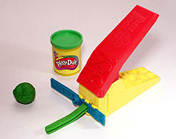

Extrusion is the process of creating an object with a fixed cross-sectional profile. OpenSCAD provides two commands to create 3D solids from a 2D shape: linear_extrude() and rotate_extrude(). Linear extrusion is similar to pushing Playdoh through a press with a die of a specific shape.
Rotational extrusion is similar to the process of turning or "throwing" a bowl on the Potter's wheel.
Both extrusion methods work on a (possibly disjointed) 2D shape which exists on the X-Y plane. While transformations that operates on both 2D shapes and 3D solids can move a shape off the X-Y plane, when the extrusion is performed the end result is not very intuitive. What actually happens is that any information in the third coordinate (the Z coordinate) is ignored for any 2D shape, this process amounts to an implicit projection() performed on any 2D shape before the extrusion is executed. It is recommended to perform extrusion on shapes that remains strictly on the X-Y plane.

linear_extrude() works like a Playdoh extrusion press
rotate_extrude() emulates throwing a vessel
Created with the Personal Edition of HelpNDoc: Generate EPub eBooks with ease